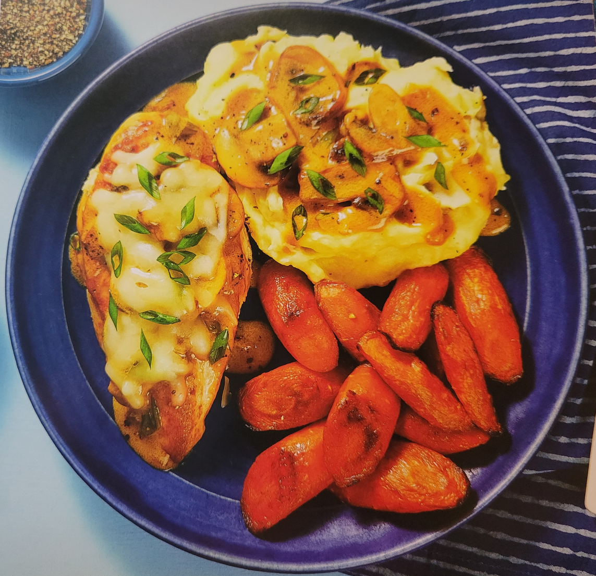

Home
Cheesy Smothered Mushroom Chicken

Ingredients
- 9 oz - Carrots
- 4 oz - Button Mushrooms
- 2 - Scallions
- 12 oz - Potatoes
- 10 oz - Chicken Cutlets
- 3 TBSP - Sour Cream
- 1 - Chicken Stock Concentrate
- 1/4 cup - Shredded Monterey Jack Cheese
Bust Out
- Peeler
- Baking sheet
- Large pot
- Strainer
- Paper towels
- Large pan
- Potato masher
- Salt
- Pepper
- Cooking Oil (1 TBSP)
- Butter (2 TBSP)
1) Prep
- Adjust rack to top position and preheat oven to 425 degrees
- Wash and dry produce
- Trim, peel, and cut carrots on a diagonal into 1-inch pieces
- Trim and thinly slice mushrooms
- Trim and thinkly slice scallions, separating whites from greens
2) Cook Carrots & Potatoes
- Toss carrots on a baking sheet with a drizzle of oil, salt, and pepper
- Roast on top rack until tender, 25-30 minutes
- Meanwhile, dice potatoes into 1/2-inch pieces
- Place in a large pot with enough salted water to cover by 2 inches
- Bring to a boil and cook until tender, 15-20 minutes
- Reserve 1/2 cup potato cooking liquid then drain and return potatoes to pot
- Keep covered off heat until ready to mash
3) Cook Chicken
- While potatoes cook, pat chicken dry with paper towels and season all over with salt and pepper
- Heat a drizzle of oil in large pan over medium-high heat
- Add chicken and cook until browned and cooked through, 3-5 minutes per side
- Transfer to a plate
4) Mash Potatoes
- Heat pot with drained potatoes over low heat; add half the sour cream and 1 TBSP butter
- Mash potatoes until smooth and creamy, adding splashes of reserved potato cooking liquid as needed
- Season with salt and pepper
5) Make Sauce
- Heat a drizzle of oil in pan used for chicken over medium-high heat
- Add mushrooms and scallion whites; season with salt and pepper
- Cook stirring, until softended, 2-4 minutes
- Stir in stock concentrate and 1/4 cup water
- Bring to a boil, then reduce to a low simmer
- Cook slightly thickened, 1-2 minutes
- Turn off heat; stir in remaining sour cream and 1 TBSP button
- Season with salt and pepper
6) Finish & Serve
- Heat pan with sauce over medium low; add chicken and spoon sauce over top
- Evenly top chicken with Monterey Jack
- Cover pan until cheese melts, 1-2 minutes
- Divide chicken, carrots, and mashed potatoes between plates
- Spoon remaining sauce over chicken and potatoes
- Garnish with scallion greens and serve